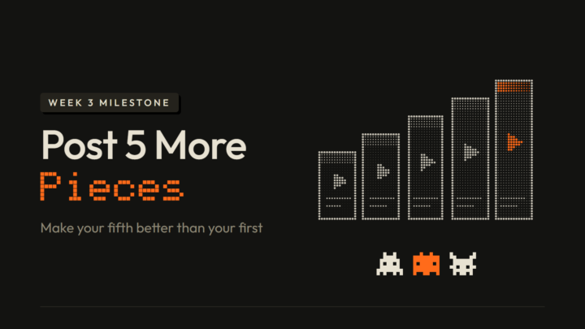

_
Quick Recap
Before the milestone, here's where your content OS is.
Week 1 updated your content firmware, Week 2 was ideation, and this week was creation with /hooks, your /tone, RUBRIC Scripts and RUBRIC Editor.
Posting is next, in Week 4, and that closes the loop.
Two frameworks to keep in mind while you make your 5:
🔺 The Content Trifecta: make what you enjoy, what others find useful, and what's unique to you
🧱 The Content Pyramid: volume at the base, then improve it on top, one thing at a time
_
What You Need to Complete
Congrats on finishing Week 3.
Post 5 more content pieces this week on the platform of your choice, then make a community post with the links to all 5, what got better from the first to the fifth, and the one thing you'll fix next.
Done beats perfect: change one thing per piece, like the hook, the script, the edit or the caption.
Tip: Send this prompt to your agent. It will help you think it through, then write your post:
"""Based on everything you know about me, use this prompt to guide me to the best possible version of this week's milestone: the 5 more content pieces I published, plus what got better from the first to the fifth. Lean on what you know about my work, my audience and how I talk at every step, so you're steering me, not just interviewing me. The post goes in the Builds tab of our Skool community, so it should sound like me talking to fellow members, many of them working in my space. Work with me step by step, don't jump to the answer.
1. Before you ask me anything, gather everything you know about me: your memory of me, my profile and instruction files (like CLAUDE.md), my projects and files in this folder, our past chats, and my earlier posts. Tell me in 2-3 lines what you found. Then use all of it the whole way through: skip any question you can already answer, put your best guess about me first in each multiple choice, and build the angles, ideas and post from my real details. That includes my milestone post from last week (my first piece and my next 3 ideas) and everything I published this week.
2. Interview me. If your app has a built-in question tool (clickable multiple-choice questions, like AskUserQuestion in Claude Code), use it, unless I say I'd rather type. Otherwise ask in chat as multiple choice (A, B, C, D, plus "something else") so I can answer fast, like "1B 2D". Ask a few at a time, and only what you can't already answer:
- the 5 pieces I published this week: what each one is, where I posted it, the link, and how it went (views, comments, anything that surprised me)
- which of my 3 ideas from last week I made, and where the others came from (the latest news, an outlier, or my own experience). Don't make up sources or links.
- what I changed from one piece to the next (the hook, the script, the edit, the caption, or something else)
- which piece I'm proudest of, and which one I'd redo
- what I want to fix next, if I already know3. Give me options for what got better from my first piece to my fifth, each with the number, comment or moment that shows it, plus options for the one thing to fix next. Check in: ask which ones ring true and what's off, and refine with me until I'm happy with what got better and have one thing to fix next.
4. Pick a post shape with me: show me the 4 shapes below in one line each and recommend the one that fits me best. Then write my post in that shape.
How it should sound:
- Like me talking to peers who are doing the same course. You can open with a hello.
- My 5 pieces can come first: the links sit in the first lines, with a few plain words on what each one is.
- Don't invent anything about me; if you don't know it, ask.
- Match my tone from how I talk to you in this chat or from what you know about me
- If it makes sense, add a few emoji that fit me and my work, not one on every line.
- No bold, no em dashes, no hype words. no "here's the thing", no "it's not just X, it's Y", and no closing line that sums up or tries to sound deep.
- You can close by consulting the room like a group of peers who know my field: ask for their take on a real decision (which piece to double down on, what they'd fix next, what they've seen work), never a bare "thoughts?". Let my tone-of-voice set the tone of that question.
- The only hashtag is #week3, on its own line at the very end.The title says plainly what I posted and what it's about, in 80 characters or fewer. Never "Week 3", never vague like ("My update", "5 more posts").
Here are a few post shapes. But don't be limited to these, it's just to give you an idea...
Shape A, Check-in:
Title: [What I posted, said plainly]
[Hello line] [emoji]
I posted 5 more pieces this week 👉
1. [link] [what it is]
2. [link] [what it is]
3. [link] [what it is]
4. [link] [what it is]
5. [link] [what it is]
What got better from the first to the fifth: [one or two lines, with a number if I have one]
What I'll fix next: [one thing]
[A question that consults the room as peers in my field]
#week3Shape B, First vs fifth:
Title: [My first piece vs my fifth, said plainly]
[Hello line] [emoji]
5 more pieces up this week. Here's my first and my fifth side by side:
First 👉 [link]
Fifth 👉 [link]
[What changed between them, and how it showed]
The other 3: [link] [link] [link]
Next I'm fixing: [one thing]
[A question that consults the room as peers in my field]
#week3Shape C, I posted them:
Title: Posted 5 more! [what they're about, plainly]
[Hello line] I posted them [emoji]
[What they are, where, and one honest line about how the week felt or went]
1️⃣ [link]. [what it is]
2️⃣ [link]. [what]
3️⃣ [link]. [what]
4️⃣ [link]. [what]
5️⃣ [link]. [what]
What got better: [one line]
What I'll fix next: [one line]
[A question that consults the room as peers in my field, or a tip I'd love from them]
#week3Shape D, Wildcard:
No template. Make something completely different from A, B and C, built from my answers, everything you know about me and the way I talk, so it sounds like me. When you show me the shapes, tell me in one line what your wildcard would be. It still follows the voice rules and the title rule, links my 5 pieces in the first lines, says what got better from the first to the fifth and the one thing I'll fix next, and ends with #week3."""
_
Where to Post
Share your milestone in the 🧪 Builds tab.